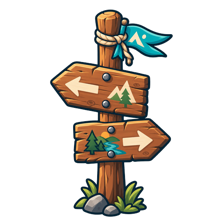

Choose your course
Eight AP courses, each laid out from its published unit outline as ten areas of stops. A short placement check decides where on the map you begin.
BIOAP Biology
CALAP Calculus AB
CHMAP Chemistry
CSAAP Computer Science A
PSYAP Psychology
USHAP U.S. History
WHIAP World History
ENGAP English Language
 Benny
Benny Buddy
Buddy Penny
Penny